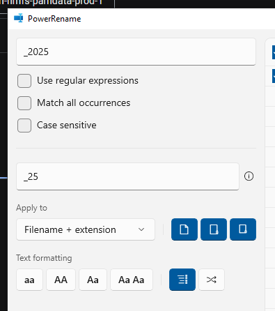

Slocum DMON 2
The DMON has two sampling routines for low and high frequency; continuous recording of the low-frequency hydrophone at 2 kHz and duty-cycled recording of the high-frequency hydrophone at 120 kHz for 30 seconds out of every 450 seconds (30 sec on 7.5 minutes off, 8 minute cycle) (LF2_HF120d30_450s.bin). The low frequency hydrophone recordings are .wav2 and the high frequency hydrophone recordings are .wav3. These files have to be renamed to .wav to be usable, so this script renames each wav file with its respective frequency
Offload data
- Glider techs: open Slocum glider and follow dmon instructions section H and I (up to step 4) here
- copy raw files to a hard drive
- Pass hard drive off to PAM analyst
Decompress data and convert to usable audio file format
- PAM analyst: Get offloaded data from glider team (section I here)
- If you only see .dgt files, then you will need to unpack them to get .wav and other recording metadata files
- You do not need to follow these steps if you can see .err, .log, .wav2, .wav3, and .xml files for each .dtg file
- Download the dmon software here and open d3read.exe
- You should see a new terminal window open, prompting you to enter a directory. Copy the directory where the .dgt files are located and press enter
- You will then be prompted to ‘Input filename base?’, type the file header of each dgt file (before the three digits ###) and hit enter
- Example: for the file named risso001.dgt, you would type risso and hit enter
- You should then see a list of .dgt files in that directory and the unpacking process should start
- If .flac files are needed, use the wav2flac.m matlab script
Clean wav Files and Segment Duty Cycled Data
The existing processing workflow for DMON data requires access to an IDL Runtime license
Open the ‘reformat_dmon_wav_files.sav’ file, this will open a stand alone application window
You will be prompted to choose a folder with DMON data, select a directory that includes the unpackaged data files from the steps above (including wav and log.xml files)
You will then be prompted to choose an output folder, it is recommended you save your processed audio files in a subfolder
You should then see the two file paths in the application window, click ‘Go!’ and the processing will start
Close the window once all the raw audio files have been renamed and separated based on the sampling routine
This processing renames the files to include a 4 digit year. Matlab and other processing softwares expect two digit years, so we need to rename these
Open files explorer and select all of the newly processed audio files
Right click on the files and select ‘Rename with PowerRename’. If you do not see this option, you may need to use different renaming methods/software
In the PowerRename window, fill in the four digit year to the ‘Search for’ box and the two digit year in the ‘Replace with’ box

Click ‘Apply’ and all of your files should now have the YYMMDD naming structure needed for the next data processing steps
R methods - work in progress
Create full bandwidth LTSA
Open Triton in MATLAB by typing ‘triton’ into command window
In the control window, click on Tools -> Make LTSA from Directory of Files
Enter 1 for wav
Navigate to your directory of flac files and click ‘Select Folder’
Use 5 seconds and 200 Hz settings, press ok, save LTSA as DeploymentID_SamplingRate_5s_200Hz.ltsa (ex. sg639_Sep2024_200kHz_5s_200Hz.ltsa)
Update Deployment Tracker Spreadsheet
- Open Glider Deployment Tracker Spreadsheet and ensure all fields have been completed
- Use the full bandwidth LTSA to mark the data start and end (or use file timestamps) and assess overall data quality
- Calculate the deployment duration, distance, and recording duration and fill in the associated columns